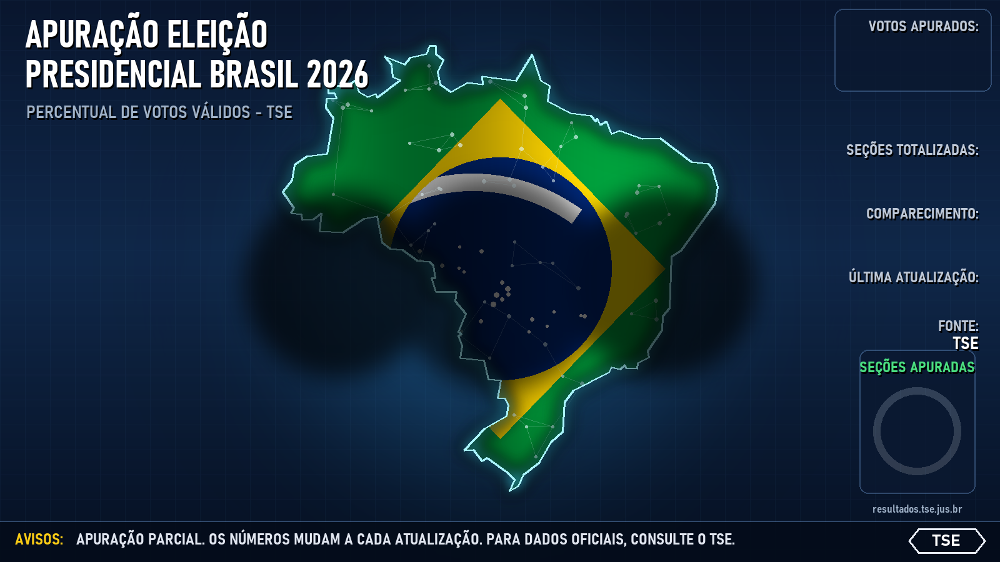

Aguardando dados…
–
–%
– votos
–
–%
– votos
–
–
–
–
–
Estado / Região
Vantagem no Estado
Candidato lidera no estado / região
"% apur." = seções totalizadas na UF
▲/▼ = variação de pontos percentuais desde a última leitura
1ºT = % no 1º turno (só entre os 2) e diferença para agora
Evolução
um ponto a cada 5 minutos
Apuração por estado
área = % de seções apuradas · linhas = % de cada candidato · clique num estado para ampliar
–
área = % de seções apuradas · linhas = % de votos válidos de cada candidato